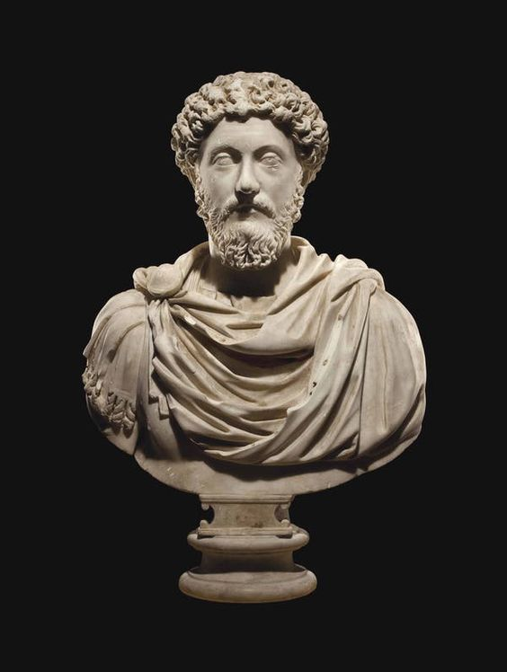

HOME
NEW
SUPPORT
ABOUT

Title: Stoicism: Embracing Inner Resilience in an Uncertain World
Introduction:
In the face of adversity and the ever-changing nature of life, many philosophical schools of thought have emerged throughout history to help individuals find meaning, purpose, and tranquility. One such timeless philosophy is Stoicism. Developed in ancient Greece and embraced by prominent figures like Marcus Aurelius and Epictetus, Stoicism provides practical wisdom and guidance for navigating the complexities of life with resilience and inner strength. In this blog post, we will explore the fundamental principles of Stoicism and how they can empower us to live a more fulfilling and meaningful life.
1) Understanding the Philosophy:
At its core, Stoicism encourages individuals to focus on what they
can control and accept what they cannot. It teaches that external circumstances
are beyond our influence, but our reactions and attitudes towards them are within
our power. By developing an inner fortress of resilience, Stoicism enables us to
face challenges with equanimity and maintain a sense of peace amidst chaos.
2) Embracing the Dichotomy of Control:
According to Stoicism, there are two categories of things in life: things that are within our control and things that are not. Our thoughts, emotions, and actions fall within our control, while external events, other people's opinions, and the passage of time lie beyond our influence. By recognizing this dichotomy and directing our energy towards what we can control, we free ourselves from unnecessary anxiety and stress caused by futile attempts to manipulate the uncontrollable.
3) Practicing Negative Visualization:
Stoicism encourages us to contemplate the impermanence of things and to prepare ourselves for loss or adversity. Negative visualization involves consciously imagining worst-case scenarios, not to dwell on fear but to cultivate gratitude and appreciation for what we have in the present moment. By acknowledging the transitory nature of life's blessings, we learn to cherish them and develop resilience in the face of their potential loss.
4) Developing Virtue and Moral Integrity:
For Stoics, the path to true fulfillment lies in cultivating virtue and moral integrity. They believed that virtues such as wisdom, courage, justice, and temperance are essential for living a good life. By focusing on the development of these virtues, individuals align their actions with their principles, leading to a greater sense of self-worth and a deeper connection with others.
5)Embracing the Power of Acceptance:
Stoicism emphasizes the importance of accepting life as it is, rather than resisting or resenting it. This acceptance does not imply passivity or indifference but rather a recognition of the inherent limitations of our control over external circumstances. By accepting reality and approaching each situation with equanimity, we can find peace and contentment regardless of the outcomes.
6)Practicing Mindfulness and Resilience:
Mindfulness, a practice central to Stoicism, involves cultivating awareness of the present moment and detaching ourselves from negative emotions and judgments. By training our minds to focus on the present and accepting the imperfections of life, we can reduce suffering and develop resilience. Stoicism teaches us that setbacks are not failures but opportunities for growth and self-improvement.
Conclusion:
In a world filled with uncertainty and turmoil, Stoicism offers a timeless philosophy that empowers individuals to find meaning, inner strength, and tranquility. By embracing the principles of Stoicism, we can learn to navigate life's challenges with resilience, cultivate virtues, and live a more fulfilling and purposeful existence. Let us remember that while we may not have control over the external circumstances, we have the power to shape our inner world and choose our response to them. As Epictetus wisely said, "It's not what happens to you, but how you react to it that matters."